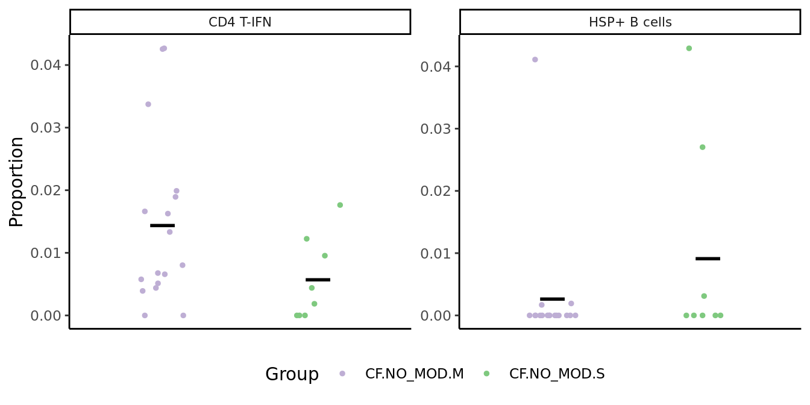
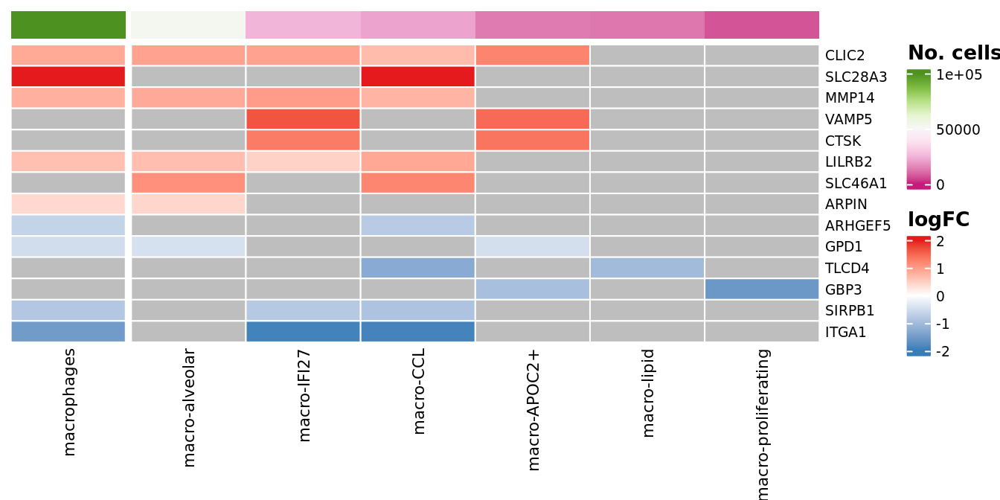
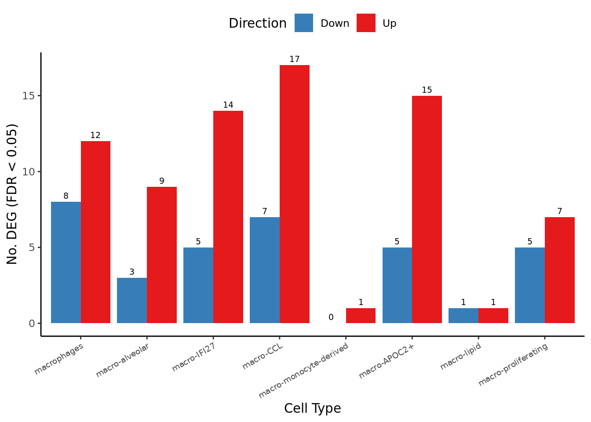
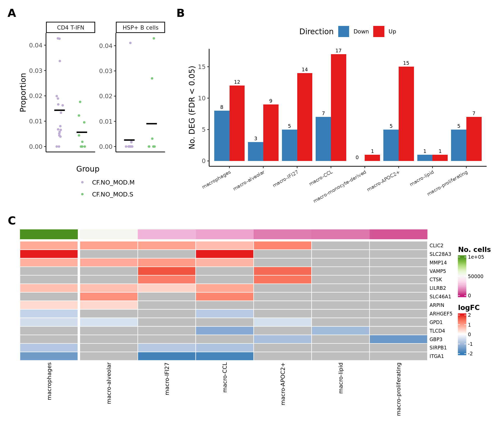
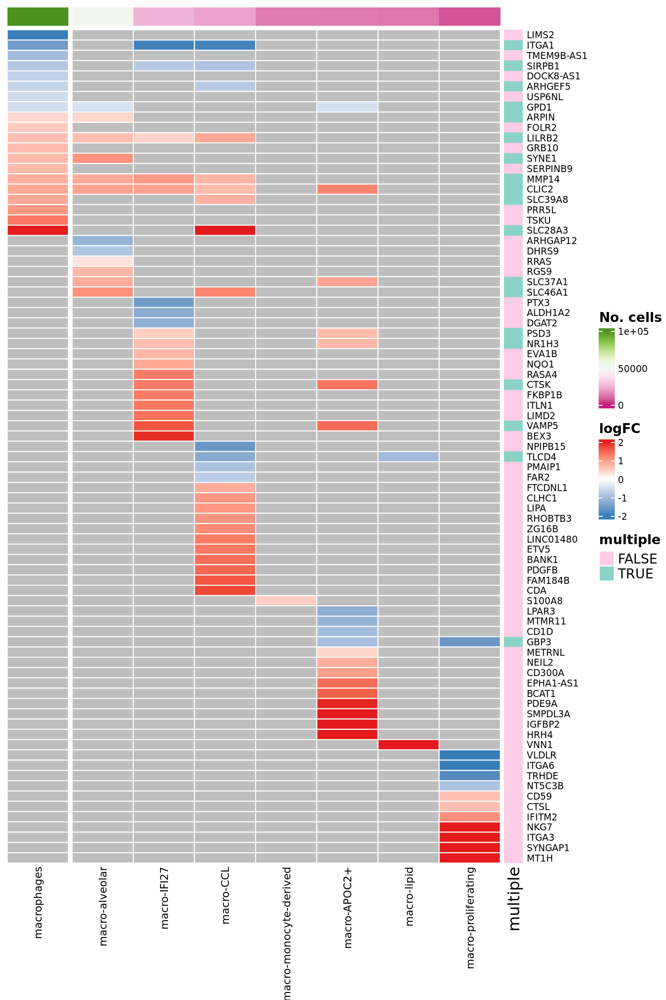
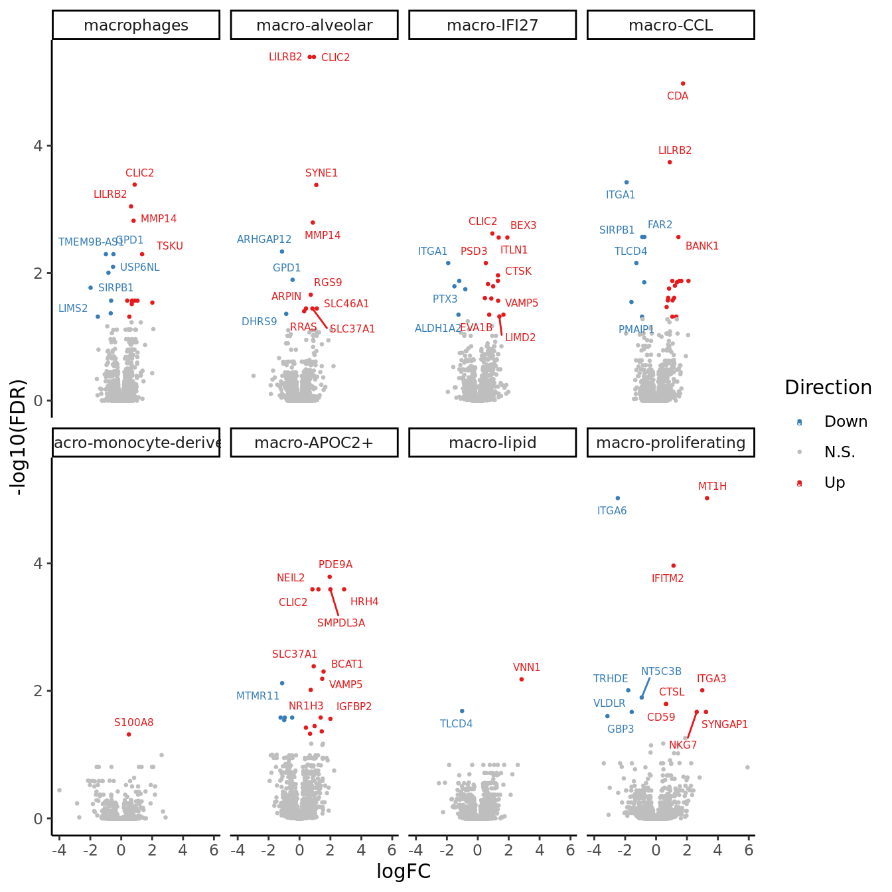

Figure 4
Jovana Maksimovic
January 06, 2025
Last updated: 2025-01-06
Checks: 7 0
Knit directory: paed-inflammation-CITEseq/
This reproducible R Markdown analysis was created with workflowr (version 1.7.1). The Checks tab describes the reproducibility checks that were applied when the results were created. The Past versions tab lists the development history.
Great! Since the R Markdown file has been committed to the Git repository, you know the exact version of the code that produced these results.
Great job! The global environment was empty. Objects defined in the global environment can affect the analysis in your R Markdown file in unknown ways. For reproduciblity it’s best to always run the code in an empty environment.
The command set.seed(20240216) was run prior to running
the code in the R Markdown file. Setting a seed ensures that any results
that rely on randomness, e.g. subsampling or permutations, are
reproducible.
Great job! Recording the operating system, R version, and package versions is critical for reproducibility.
Nice! There were no cached chunks for this analysis, so you can be confident that you successfully produced the results during this run.
Great job! Using relative paths to the files within your workflowr project makes it easier to run your code on other machines.
Great! You are using Git for version control. Tracking code development and connecting the code version to the results is critical for reproducibility.
The results in this page were generated with repository version 0a567aa. See the Past versions tab to see a history of the changes made to the R Markdown and HTML files.
Note that you need to be careful to ensure that all relevant files for
the analysis have been committed to Git prior to generating the results
(you can use wflow_publish or
wflow_git_commit). workflowr only checks the R Markdown
file, but you know if there are other scripts or data files that it
depends on. Below is the status of the Git repository when the results
were generated:
Ignored files:
Ignored: .Rhistory
Ignored: .Rproj.user/
Ignored: analysis/figure/
Ignored: analysis/obsolete/
Ignored: data/C133_Neeland_batch1/
Ignored: data/C133_Neeland_merged/
Ignored: output/dge_analysis/obsolete/
Ignored: renv/library/
Ignored: renv/staging/
Untracked files:
Untracked: analysis/14.0_DGE_analysis_T-cells.Rmd
Untracked: analysis/99.0_Figure_1.Rmd
Untracked: analysis/99.0_Figure_2.Rmd
Untracked: analysis/99.0_Figure_3.Rmd
Untracked: analysis/99.0_Figure_5.Rmd
Untracked: analysis/99.0_Supplementary_Figure_ADTs.Rmd
Untracked: broad_markers_seurat.csv
Untracked: code/background_job.R
Untracked: code/reverse_modifier_severity_comparisons.sh
Untracked: data/intermediate_objects/CD4 T cells.CF_samples.fit.rds
Untracked: data/intermediate_objects/CD4 T cells.all_samples.fit.rds
Untracked: data/intermediate_objects/CD8 T cells.CF_samples.fit.rds
Untracked: data/intermediate_objects/CD8 T cells.all_samples.fit.rds
Untracked: data/intermediate_objects/DC cells.CF_samples.fit.rds
Untracked: data/intermediate_objects/DC cells.all_samples.fit.rds
Untracked: data/intermediate_objects/T cells.CF_samples.fit.rds
Untracked: data/intermediate_objects/T cells.all_samples.fit.rds
Untracked: output/dge_analysis/T cells/
Unstaged changes:
Modified: .gitignore
Modified: analysis/06.0_azimuth_annotation.Rmd
Modified: analysis/09.0_integrate_cluster_macro_cells.Rmd
Modified: analysis/13.1_DGE_analysis_macro-alveolar.Rmd
Modified: analysis/13.7_DGE_analysis_macro-proliferating.Rmd
Deleted: analysis/14.0_proportions_analysis_ann_level_1.Rmd
Deleted: analysis/14.1_proportions_analysis_ann_level_3_non-macrophages.Rmd
Deleted: analysis/14.2_proportions_analysis_ann_level_3_macrophages.Rmd
Deleted: analysis/15.0_Figure_1.Rmd
Deleted: analysis/16.0_Figure_2.Rmd
Deleted: analysis/17.0_Supplementary_Figure_ADTs.Rmd
Modified: analysis/index.Rmd
Modified: code/utility.R
Modified: data/cluster_annotations/marker_proteins_TNK_supp.xlsx
Modified: data/cluster_annotations/marker_proteins_macrophages_supp.xlsx
Modified: data/cluster_annotations/marker_proteins_other_supp.xlsx
Modified: data/cluster_annotations/seurat_markers_all_cells.rds
Modified: data/intermediate_objects/macro-APOC2+.CF_samples.fit.rds
Modified: data/intermediate_objects/macro-APOC2+.all_samples.fit.rds
Modified: data/intermediate_objects/macro-CCL.CF_samples.fit.rds
Modified: data/intermediate_objects/macro-CCL.all_samples.fit.rds
Modified: data/intermediate_objects/macro-IFI27.CF_samples.fit.rds
Modified: data/intermediate_objects/macro-IFI27.all_samples.fit.rds
Modified: data/intermediate_objects/macro-alveolar.CF_samples.fit.rds
Modified: data/intermediate_objects/macro-alveolar.all_samples.fit.rds
Modified: data/intermediate_objects/macro-lipid.CF_samples.fit.rds
Modified: data/intermediate_objects/macro-lipid.all_samples.fit.rds
Modified: data/intermediate_objects/macro-monocyte-derived.CF_samples.fit.rds
Modified: data/intermediate_objects/macro-monocyte-derived.all_samples.fit.rds
Modified: data/intermediate_objects/macro-proliferating.CF_samples.fit.rds
Modified: data/intermediate_objects/macro-proliferating.all_samples.fit.rds
Modified: data/intermediate_objects/macrophages.CF_samples.fit.rds
Modified: data/intermediate_objects/macrophages.all_samples.fit.rds
Modified: output/dge_analysis/macro-APOC2+/ORA.FIBROSIS.CF.IVAvCF.NO_MOD.csv
Modified: output/dge_analysis/macro-APOC2+/ORA.FIBROSIS.CF.IVAvNON_CF.CTRL.csv
Modified: output/dge_analysis/macro-APOC2+/ORA.FIBROSIS.CF.NO_MOD.SvCF.NO_MOD.M.csv
Modified: output/dge_analysis/macro-APOC2+/ORA.GO.CF.IVAvCF.NO_MOD.csv
Modified: output/dge_analysis/macro-APOC2+/ORA.GO.CF.IVAvNON_CF.CTRL.csv
Modified: output/dge_analysis/macro-APOC2+/ORA.GO.CF.NO_MOD.SvCF.NO_MOD.M.csv
Modified: output/dge_analysis/macro-APOC2+/ORA.HALLMARK.CF.IVAvCF.NO_MOD.csv
Modified: output/dge_analysis/macro-APOC2+/ORA.HALLMARK.CF.IVAvNON_CF.CTRL.csv
Modified: output/dge_analysis/macro-APOC2+/ORA.HALLMARK.CF.NO_MOD.SvCF.NO_MOD.M.csv
Modified: output/dge_analysis/macro-APOC2+/ORA.REACTOME.CF.IVAvCF.NO_MOD.csv
Modified: output/dge_analysis/macro-APOC2+/ORA.REACTOME.CF.IVAvNON_CF.CTRL.csv
Modified: output/dge_analysis/macro-APOC2+/ORA.REACTOME.CF.NO_MOD.SvCF.NO_MOD.M.csv
Modified: output/dge_analysis/macro-APOC2+/ORA.WP.CF.IVAvCF.NO_MOD.csv
Modified: output/dge_analysis/macro-APOC2+/ORA.WP.CF.IVAvNON_CF.CTRL.csv
Modified: output/dge_analysis/macro-APOC2+/ORA.WP.CF.NO_MOD.SvCF.NO_MOD.M.csv
Modified: output/dge_analysis/macro-CCL/ORA.FIBROSIS.CF.IVAvCF.NO_MOD.csv
Modified: output/dge_analysis/macro-CCL/ORA.FIBROSIS.CF.IVAvNON_CF.CTRL.csv
Modified: output/dge_analysis/macro-CCL/ORA.FIBROSIS.CF.NO_MOD.SvCF.NO_MOD.M.csv
Modified: output/dge_analysis/macro-CCL/ORA.FIBROSIS.CF.NO_MODvNON_CF.CTRL.csv
Modified: output/dge_analysis/macro-CCL/ORA.GO.CF.IVAvCF.NO_MOD.csv
Modified: output/dge_analysis/macro-CCL/ORA.GO.CF.IVAvNON_CF.CTRL.csv
Modified: output/dge_analysis/macro-CCL/ORA.GO.CF.NO_MOD.SvCF.NO_MOD.M.csv
Modified: output/dge_analysis/macro-CCL/ORA.GO.CF.NO_MODvNON_CF.CTRL.csv
Modified: output/dge_analysis/macro-CCL/ORA.HALLMARK.CF.IVAvCF.NO_MOD.csv
Modified: output/dge_analysis/macro-CCL/ORA.HALLMARK.CF.IVAvNON_CF.CTRL.csv
Modified: output/dge_analysis/macro-CCL/ORA.HALLMARK.CF.NO_MOD.SvCF.NO_MOD.M.csv
Modified: output/dge_analysis/macro-CCL/ORA.HALLMARK.CF.NO_MODvNON_CF.CTRL.csv
Modified: output/dge_analysis/macro-CCL/ORA.REACTOME.CF.IVAvCF.NO_MOD.csv
Modified: output/dge_analysis/macro-CCL/ORA.REACTOME.CF.IVAvNON_CF.CTRL.csv
Modified: output/dge_analysis/macro-CCL/ORA.REACTOME.CF.NO_MOD.SvCF.NO_MOD.M.csv
Modified: output/dge_analysis/macro-CCL/ORA.REACTOME.CF.NO_MODvNON_CF.CTRL.csv
Modified: output/dge_analysis/macro-CCL/ORA.WP.CF.IVAvCF.NO_MOD.csv
Modified: output/dge_analysis/macro-CCL/ORA.WP.CF.IVAvNON_CF.CTRL.csv
Modified: output/dge_analysis/macro-CCL/ORA.WP.CF.NO_MOD.SvCF.NO_MOD.M.csv
Modified: output/dge_analysis/macro-CCL/ORA.WP.CF.NO_MODvNON_CF.CTRL.csv
Modified: output/dge_analysis/macro-IFI27/ORA.FIBROSIS.CF.IVAvCF.NO_MOD.csv
Modified: output/dge_analysis/macro-IFI27/ORA.FIBROSIS.CF.IVAvNON_CF.CTRL.csv
Modified: output/dge_analysis/macro-IFI27/ORA.FIBROSIS.CF.NO_MOD.SvCF.NO_MOD.M.csv
Modified: output/dge_analysis/macro-IFI27/ORA.FIBROSIS.CF.NO_MODvNON_CF.CTRL.csv
Modified: output/dge_analysis/macro-IFI27/ORA.GO.CF.IVAvCF.NO_MOD.csv
Modified: output/dge_analysis/macro-IFI27/ORA.GO.CF.IVAvNON_CF.CTRL.csv
Modified: output/dge_analysis/macro-IFI27/ORA.GO.CF.NO_MOD.SvCF.NO_MOD.M.csv
Modified: output/dge_analysis/macro-IFI27/ORA.GO.CF.NO_MODvNON_CF.CTRL.csv
Modified: output/dge_analysis/macro-IFI27/ORA.HALLMARK.CF.IVAvCF.NO_MOD.csv
Modified: output/dge_analysis/macro-IFI27/ORA.HALLMARK.CF.IVAvNON_CF.CTRL.csv
Modified: output/dge_analysis/macro-IFI27/ORA.HALLMARK.CF.NO_MOD.SvCF.NO_MOD.M.csv
Modified: output/dge_analysis/macro-IFI27/ORA.HALLMARK.CF.NO_MODvNON_CF.CTRL.csv
Modified: output/dge_analysis/macro-IFI27/ORA.REACTOME.CF.IVAvCF.NO_MOD.csv
Modified: output/dge_analysis/macro-IFI27/ORA.REACTOME.CF.IVAvNON_CF.CTRL.csv
Modified: output/dge_analysis/macro-IFI27/ORA.REACTOME.CF.NO_MOD.SvCF.NO_MOD.M.csv
Modified: output/dge_analysis/macro-IFI27/ORA.REACTOME.CF.NO_MODvNON_CF.CTRL.csv
Modified: output/dge_analysis/macro-IFI27/ORA.WP.CF.IVAvCF.NO_MOD.csv
Modified: output/dge_analysis/macro-IFI27/ORA.WP.CF.IVAvNON_CF.CTRL.csv
Modified: output/dge_analysis/macro-IFI27/ORA.WP.CF.NO_MOD.SvCF.NO_MOD.M.csv
Modified: output/dge_analysis/macro-IFI27/ORA.WP.CF.NO_MODvNON_CF.CTRL.csv
Modified: output/dge_analysis/macro-alveolar/ORA.FIBROSIS.CF.IVAvCF.NO_MOD.csv
Modified: output/dge_analysis/macro-alveolar/ORA.FIBROSIS.CF.IVAvNON_CF.CTRL.csv
Modified: output/dge_analysis/macro-alveolar/ORA.FIBROSIS.CF.NO_MOD.SvCF.NO_MOD.M.csv
Modified: output/dge_analysis/macro-alveolar/ORA.FIBROSIS.CF.NO_MODvNON_CF.CTRL.csv
Modified: output/dge_analysis/macro-alveolar/ORA.GO.CF.IVAvCF.NO_MOD.csv
Modified: output/dge_analysis/macro-alveolar/ORA.GO.CF.IVAvNON_CF.CTRL.csv
Modified: output/dge_analysis/macro-alveolar/ORA.GO.CF.NO_MOD.SvCF.NO_MOD.M.csv
Modified: output/dge_analysis/macro-alveolar/ORA.GO.CF.NO_MODvNON_CF.CTRL.csv
Modified: output/dge_analysis/macro-alveolar/ORA.HALLMARK.CF.IVAvCF.NO_MOD.csv
Modified: output/dge_analysis/macro-alveolar/ORA.HALLMARK.CF.IVAvNON_CF.CTRL.csv
Modified: output/dge_analysis/macro-alveolar/ORA.HALLMARK.CF.NO_MOD.SvCF.NO_MOD.M.csv
Modified: output/dge_analysis/macro-alveolar/ORA.HALLMARK.CF.NO_MODvNON_CF.CTRL.csv
Modified: output/dge_analysis/macro-alveolar/ORA.REACTOME.CF.IVAvCF.NO_MOD.csv
Modified: output/dge_analysis/macro-alveolar/ORA.REACTOME.CF.IVAvNON_CF.CTRL.csv
Modified: output/dge_analysis/macro-alveolar/ORA.REACTOME.CF.NO_MOD.SvCF.NO_MOD.M.csv
Modified: output/dge_analysis/macro-alveolar/ORA.REACTOME.CF.NO_MODvNON_CF.CTRL.csv
Modified: output/dge_analysis/macro-alveolar/ORA.WP.CF.IVAvCF.NO_MOD.csv
Modified: output/dge_analysis/macro-alveolar/ORA.WP.CF.IVAvNON_CF.CTRL.csv
Modified: output/dge_analysis/macro-alveolar/ORA.WP.CF.NO_MOD.SvCF.NO_MOD.M.csv
Modified: output/dge_analysis/macro-alveolar/ORA.WP.CF.NO_MODvNON_CF.CTRL.csv
Modified: output/dge_analysis/macro-lipid/ORA.FIBROSIS.CF.IVAvCF.NO_MOD.csv
Modified: output/dge_analysis/macro-lipid/ORA.FIBROSIS.CF.IVAvNON_CF.CTRL.csv
Modified: output/dge_analysis/macro-lipid/ORA.FIBROSIS.CF.NO_MOD.SvCF.NO_MOD.M.csv
Modified: output/dge_analysis/macro-lipid/ORA.FIBROSIS.CF.NO_MODvNON_CF.CTRL.csv
Modified: output/dge_analysis/macro-lipid/ORA.GO.CF.IVAvCF.NO_MOD.csv
Modified: output/dge_analysis/macro-lipid/ORA.GO.CF.IVAvNON_CF.CTRL.csv
Modified: output/dge_analysis/macro-lipid/ORA.GO.CF.NO_MOD.SvCF.NO_MOD.M.csv
Modified: output/dge_analysis/macro-lipid/ORA.GO.CF.NO_MODvNON_CF.CTRL.csv
Modified: output/dge_analysis/macro-lipid/ORA.HALLMARK.CF.IVAvCF.NO_MOD.csv
Modified: output/dge_analysis/macro-lipid/ORA.HALLMARK.CF.IVAvNON_CF.CTRL.csv
Modified: output/dge_analysis/macro-lipid/ORA.HALLMARK.CF.NO_MOD.SvCF.NO_MOD.M.csv
Modified: output/dge_analysis/macro-lipid/ORA.HALLMARK.CF.NO_MODvNON_CF.CTRL.csv
Modified: output/dge_analysis/macro-lipid/ORA.REACTOME.CF.IVAvCF.NO_MOD.csv
Modified: output/dge_analysis/macro-lipid/ORA.REACTOME.CF.IVAvNON_CF.CTRL.csv
Modified: output/dge_analysis/macro-lipid/ORA.REACTOME.CF.NO_MOD.SvCF.NO_MOD.M.csv
Modified: output/dge_analysis/macro-lipid/ORA.REACTOME.CF.NO_MODvNON_CF.CTRL.csv
Modified: output/dge_analysis/macro-lipid/ORA.WP.CF.IVAvCF.NO_MOD.csv
Modified: output/dge_analysis/macro-lipid/ORA.WP.CF.IVAvNON_CF.CTRL.csv
Modified: output/dge_analysis/macro-lipid/ORA.WP.CF.NO_MOD.SvCF.NO_MOD.M.csv
Modified: output/dge_analysis/macro-lipid/ORA.WP.CF.NO_MODvNON_CF.CTRL.csv
Modified: output/dge_analysis/macro-monocyte-derived/ORA.FIBROSIS.CF.IVAvCF.NO_MOD.csv
Modified: output/dge_analysis/macro-monocyte-derived/ORA.FIBROSIS.CF.IVAvNON_CF.CTRL.csv
Modified: output/dge_analysis/macro-monocyte-derived/ORA.FIBROSIS.CF.NO_MOD.SvCF.NO_MOD.M.csv
Modified: output/dge_analysis/macro-monocyte-derived/ORA.FIBROSIS.CF.NO_MODvNON_CF.CTRL.csv
Modified: output/dge_analysis/macro-monocyte-derived/ORA.GO.CF.IVAvCF.NO_MOD.csv
Modified: output/dge_analysis/macro-monocyte-derived/ORA.GO.CF.IVAvNON_CF.CTRL.csv
Modified: output/dge_analysis/macro-monocyte-derived/ORA.GO.CF.NO_MOD.SvCF.NO_MOD.M.csv
Modified: output/dge_analysis/macro-monocyte-derived/ORA.GO.CF.NO_MODvNON_CF.CTRL.csv
Modified: output/dge_analysis/macro-monocyte-derived/ORA.HALLMARK.CF.IVAvCF.NO_MOD.csv
Modified: output/dge_analysis/macro-monocyte-derived/ORA.HALLMARK.CF.IVAvNON_CF.CTRL.csv
Modified: output/dge_analysis/macro-monocyte-derived/ORA.HALLMARK.CF.NO_MOD.SvCF.NO_MOD.M.csv
Modified: output/dge_analysis/macro-monocyte-derived/ORA.HALLMARK.CF.NO_MODvNON_CF.CTRL.csv
Modified: output/dge_analysis/macro-monocyte-derived/ORA.REACTOME.CF.IVAvCF.NO_MOD.csv
Modified: output/dge_analysis/macro-monocyte-derived/ORA.REACTOME.CF.IVAvNON_CF.CTRL.csv
Modified: output/dge_analysis/macro-monocyte-derived/ORA.REACTOME.CF.NO_MOD.SvCF.NO_MOD.M.csv
Modified: output/dge_analysis/macro-monocyte-derived/ORA.REACTOME.CF.NO_MODvNON_CF.CTRL.csv
Modified: output/dge_analysis/macro-monocyte-derived/ORA.WP.CF.IVAvCF.NO_MOD.csv
Modified: output/dge_analysis/macro-monocyte-derived/ORA.WP.CF.IVAvNON_CF.CTRL.csv
Modified: output/dge_analysis/macro-monocyte-derived/ORA.WP.CF.NO_MOD.SvCF.NO_MOD.M.csv
Modified: output/dge_analysis/macro-monocyte-derived/ORA.WP.CF.NO_MODvNON_CF.CTRL.csv
Modified: output/dge_analysis/macro-proliferating/ORA.FIBROSIS.CF.IVAvCF.NO_MOD.csv
Modified: output/dge_analysis/macro-proliferating/ORA.FIBROSIS.CF.NO_MOD.SvCF.NO_MOD.M.csv
Modified: output/dge_analysis/macro-proliferating/ORA.FIBROSIS.CF.NO_MODvNON_CF.CTRL.csv
Modified: output/dge_analysis/macro-proliferating/ORA.GO.CF.IVAvCF.NO_MOD.csv
Modified: output/dge_analysis/macro-proliferating/ORA.GO.CF.NO_MOD.SvCF.NO_MOD.M.csv
Modified: output/dge_analysis/macro-proliferating/ORA.GO.CF.NO_MODvNON_CF.CTRL.csv
Modified: output/dge_analysis/macro-proliferating/ORA.HALLMARK.CF.IVAvCF.NO_MOD.csv
Modified: output/dge_analysis/macro-proliferating/ORA.HALLMARK.CF.NO_MOD.SvCF.NO_MOD.M.csv
Modified: output/dge_analysis/macro-proliferating/ORA.HALLMARK.CF.NO_MODvNON_CF.CTRL.csv
Modified: output/dge_analysis/macro-proliferating/ORA.REACTOME.CF.IVAvCF.NO_MOD.csv
Modified: output/dge_analysis/macro-proliferating/ORA.REACTOME.CF.NO_MOD.SvCF.NO_MOD.M.csv
Modified: output/dge_analysis/macro-proliferating/ORA.REACTOME.CF.NO_MODvNON_CF.CTRL.csv
Modified: output/dge_analysis/macro-proliferating/ORA.WP.CF.IVAvCF.NO_MOD.csv
Modified: output/dge_analysis/macro-proliferating/ORA.WP.CF.NO_MOD.SvCF.NO_MOD.M.csv
Modified: output/dge_analysis/macro-proliferating/ORA.WP.CF.NO_MODvNON_CF.CTRL.csv
Modified: output/dge_analysis/macrophages/ORA.FIBROSIS.CF.IVAvCF.NO_MOD.csv
Modified: output/dge_analysis/macrophages/ORA.FIBROSIS.CF.IVAvNON_CF.CTRL.csv
Modified: output/dge_analysis/macrophages/ORA.FIBROSIS.CF.LUMA_IVAvCF.NO_MOD.csv
Modified: output/dge_analysis/macrophages/ORA.FIBROSIS.CF.NO_MOD.SvCF.NO_MOD.M.csv
Modified: output/dge_analysis/macrophages/ORA.FIBROSIS.CF.NO_MODvNON_CF.CTRL.csv
Modified: output/dge_analysis/macrophages/ORA.GO.CF.IVAvCF.NO_MOD.csv
Modified: output/dge_analysis/macrophages/ORA.GO.CF.IVAvNON_CF.CTRL.csv
Modified: output/dge_analysis/macrophages/ORA.GO.CF.LUMA_IVAvCF.NO_MOD.csv
Modified: output/dge_analysis/macrophages/ORA.GO.CF.NO_MOD.SvCF.NO_MOD.M.csv
Modified: output/dge_analysis/macrophages/ORA.GO.CF.NO_MODvNON_CF.CTRL.csv
Modified: output/dge_analysis/macrophages/ORA.HALLMARK.CF.IVAvCF.NO_MOD.csv
Modified: output/dge_analysis/macrophages/ORA.HALLMARK.CF.IVAvNON_CF.CTRL.csv
Modified: output/dge_analysis/macrophages/ORA.HALLMARK.CF.LUMA_IVAvCF.NO_MOD.csv
Modified: output/dge_analysis/macrophages/ORA.HALLMARK.CF.NO_MOD.SvCF.NO_MOD.M.csv
Modified: output/dge_analysis/macrophages/ORA.HALLMARK.CF.NO_MODvNON_CF.CTRL.csv
Modified: output/dge_analysis/macrophages/ORA.REACTOME.CF.IVAvCF.NO_MOD.csv
Modified: output/dge_analysis/macrophages/ORA.REACTOME.CF.IVAvNON_CF.CTRL.csv
Modified: output/dge_analysis/macrophages/ORA.REACTOME.CF.LUMA_IVAvCF.NO_MOD.csv
Modified: output/dge_analysis/macrophages/ORA.REACTOME.CF.NO_MOD.SvCF.NO_MOD.M.csv
Modified: output/dge_analysis/macrophages/ORA.REACTOME.CF.NO_MODvNON_CF.CTRL.csv
Modified: output/dge_analysis/macrophages/ORA.WP.CF.IVAvCF.NO_MOD.csv
Modified: output/dge_analysis/macrophages/ORA.WP.CF.IVAvNON_CF.CTRL.csv
Modified: output/dge_analysis/macrophages/ORA.WP.CF.LUMA_IVAvCF.NO_MOD.csv
Modified: output/dge_analysis/macrophages/ORA.WP.CF.NO_MOD.SvCF.NO_MOD.M.csv
Modified: output/dge_analysis/macrophages/ORA.WP.CF.NO_MODvNON_CF.CTRL.csv
Note that any generated files, e.g. HTML, png, CSS, etc., are not included in this status report because it is ok for generated content to have uncommitted changes.
These are the previous versions of the repository in which changes were
made to the R Markdown (analysis/99.0_Figure_4.Rmd) and
HTML (docs/99.0_Figure_4.html) files. If you’ve configured
a remote Git repository (see ?wflow_git_remote), click on
the hyperlinks in the table below to view the files as they were in that
past version.
| File | Version | Author | Date | Message |
|---|---|---|---|---|
| Rmd | 0a567aa | Jovana Maksimovic | 2025-01-06 | wflow_publish("analysis/99.0_Figure_4.Rmd") |
Load libraries.
suppressPackageStartupMessages({
library(SingleCellExperiment)
library(edgeR)
library(tidyverse)
library(ggplot2)
library(Seurat)
library(glmGamPoi)
library(dittoSeq)
library(here)
library(clustree)
library(patchwork)
library(AnnotationDbi)
library(org.Hs.eg.db)
library(glue)
library(speckle)
library(tidyHeatmap)
library(paletteer)
library(dsb)
library(ggh4x)
library(readxl)
})
source(here("code/utility.R"))Load data
files <- list.files(here("data/C133_Neeland_merged"),
pattern = "C133_Neeland_full_clean.*(macrophages|t_cells|other_cells)_annotated_diet.SEU.rds",
full.names = TRUE)
seuLst <- lapply(files[2:4], function(f) readRDS(f))
seu <- merge(seuLst[[1]],
y = c(seuLst[[2]],
seuLst[[3]]))
seuAn object of class Seurat
21568 features across 194407 samples within 1 assay
Active assay: RNA (21568 features, 0 variable features) used (Mb) gc trigger (Mb) max used (Mb)
Ncells 12100924 646.3 20376418 1088.3 14090832 752.6
Vcells 1354185555 10331.7 3693781618 28181.4 3551519297 27096.0Create sample meta data table.
props <- getTransformedProps(clusters = seu$ann_level_3,
sample = seu$sample.id, transform="asin")
seu@meta.data %>%
dplyr::select(sample.id,
Participant,
Disease,
Treatment,
Severity,
Group,
Group_severity,
Batch,
Age,
Sex) %>%
left_join(props$Counts %>%
data.frame %>%
group_by(sample) %>%
summarise(ncells = sum(Freq)),
by = c("sample.id" = "sample")) %>%
distinct() -> info
head(info) %>% knitr::kable()| sample.id | Participant | Disease | Treatment | Severity | Group | Group_severity | Batch | Age | Sex | ncells |
|---|---|---|---|---|---|---|---|---|---|---|
| sample_33.1 | sample_33 | CF | treated (ivacaftor) | severe | CF.IVA | CF.IVA.S | 1 | 5.950685 | M | 2139 |
| sample_25.1 | sample_25 | CF | untreated | severe | CF.NO_MOD | CF.NO_MOD.S | 1 | 4.910000 | F | 3272 |
| sample_29.1 | sample_29 | CF | untreated | severe | CF.NO_MOD | CF.NO_MOD.S | 1 | 5.989041 | F | 1568 |
| sample_27.1 | sample_27 | CF | treated (ivacaftor) | mild | CF.IVA | CF.IVA.M | 1 | 4.917808 | M | 2467 |
| sample_32.1 | sample_32 | CF | untreated | mild | CF.NO_MOD | CF.NO_MOD.M | 1 | 5.926027 | F | 2963 |
| sample_26.1 | sample_26 | CF | untreated | mild | CF.NO_MOD | CF.NO_MOD.M | 1 | 5.049315 | M | 2040 |
Prepare figure panels
# HSP+ B, CD4 T-IFN
props <- getTransformedProps(clusters = seu$ann_level_3[!str_detect(seu$ann_level_3, "macro")],
sample = seu$sample.id[!str_detect(seu$ann_level_3, "macro")], transform="asin")
props$Proportions %>% data.frame %>%
left_join(info,
by = c("sample" = "sample.id")) %>%
dplyr::filter(Group_severity %in% c("CF.NO_MOD.S", "CF.NO_MOD.M"),
clusters %in% c("CD4 T-IFN",
"HSP+ B cells")) -> dat
sig_names <- as_labeller(
c("CD4 T-IFN" = "CD4 T-IFN",
"HSP+ B cells" = "HSP+ B cells"))
pal <- RColorBrewer::brewer.pal(8, "Accent")[1:2]
names(pal) <- c("CF.NO_MOD.S", "CF.NO_MOD.M")
dat %>%
ggplot(aes(x = Group_severity,
y = Freq,
colour = Group_severity)) +
geom_jitter(stat = "identity",
width = 0.15,
size = 1) +
theme_classic() +
theme(axis.text.x = element_blank(),
axis.ticks.x = element_blank(),
axis.title.x = element_blank(),
axis.text.y = element_text(7),
legend.position = "bottom",
legend.direction = "horizontal",
strip.text = element_text(size = 8)) +
labs(x = "Group", y = "Proportion",
colour = "Group") +
facet_wrap(~clusters, scales = "free_y", ncol = 4,
labeller = sig_names) +
stat_summary(
geom = "point",
fun.y = "mean",
col = "black",
shape = "_",
size = 10) +
scale_color_manual(values = pal) -> p1
p1
seu@meta.data %>%
data.frame %>%
dplyr::select(ann_level_2) %>%
dplyr::filter(str_detect(ann_level_2, "macro")) %>%
group_by(ann_level_2) %>%
count() %>%
janitor::adorn_totals(name = "macrophages") %>%
arrange(-n) %>%
dplyr::rename(cell = ann_level_2) -> cell_freq
cell_freq cell n
macrophages 165209
macro-alveolar 52563
macro-IFI27 24864
macro-CCL 21246
macro-monocyte-derived 13461
macro-APOC2+ 13354
macro-lipid 12452
macro-IGF1 8229
macro-proliferating 6821
macro-MT 4037
macro-interstitial 3412
macro-T 2722
macro-IFN 2048files <- list.files(here("data/intermediate_objects"),
pattern = "macro.*CF_samples",
full.names = TRUE)
cutoff <- 0.05
cont_name <- "CF.NO_MOD.SvCF.NO_MOD.M"
lfc_cutoff <- 0
suffix <- ".CF_samples.fit.rds"
get_deg_data(files, cont_name, cell_freq, treat_lfc = lfc_cutoff,
suffix = suffix) -> datZero log2-FC threshold detected. Switch to glmLRT() instead.
Zero log2-FC threshold detected. Switch to glmLRT() instead.
Zero log2-FC threshold detected. Switch to glmLRT() instead.
Zero log2-FC threshold detected. Switch to glmLRT() instead.
Zero log2-FC threshold detected. Switch to glmLRT() instead.
Zero log2-FC threshold detected. Switch to glmLRT() instead.
Zero log2-FC threshold detected. Switch to glmLRT() instead.
Zero log2-FC threshold detected. Switch to glmLRT() instead. genes <- c("ARHGEF5",
"GPD1",
"ITGA1",
"SIRPB1",
"TLCD4",
"GBP3",
"CLIC2",
"LILRB2",
"MMP14",
"SLC28A3",
"SLC46A1",
"ARPIN",
"CTSK",
"VAMP5")
dat %>%
dplyr::select(gene, cell, logFC) %>%
distinct() %>%
dplyr::filter(gene %in% sort(genes)) %>%
pivot_wider(
names_from = cell, # Column whose values become new column names
values_from = logFC,
values_fill = list(logFC = NA)) %>%
arrange(across(all_of(cell_freq$cell[cell_freq$cell %in% .$cell]))) %>%
column_to_rownames(var = "gene") -> dat_lfcpal_dt <- c(paletteer::paletteer_d("RColorBrewer::Set1")[2:1], "grey")
col_fun <- circlize::colorRamp2(seq(0, 100000, length.out = 9),
(RColorBrewer::brewer.pal(9, "PiYG")))
col_split <- c(rep("aggregate", 1), rep("sub-type", ncol(dat_lfc) - 1))
col_lfc_fun <- circlize::colorRamp2(seq(-2, 2, length.out = 3),
c(pal_dt[1], "white", pal_dt[2]))
ComplexHeatmap::HeatmapAnnotation(df = cell_freq %>%
dplyr::filter(cell %in% colnames(dat_lfc)) %>%
column_to_rownames(var = "cell") %>%
dplyr::rename(`No. cells` = n),
which = "column",
show_annotation_name = FALSE,
col = list(`No. cells` = col_fun),
annotation_legend_param = list(
`No. cells` = list(direction = "vertical",
labels_gp = grid::gpar(fontsize = 7)))) -> col_ann
ComplexHeatmap::Heatmap(dat_lfc[order(rowSums(dat_lfc, na.rm = TRUE),
decreasing = TRUE),],
name = "logFC",
column_split = col_split,
column_title = NULL,
cluster_rows = FALSE,
cluster_columns = FALSE,
rect_gp = grid::gpar(col = "white", lwd = 1),
row_names_gp = grid::gpar(fontsize = 7),
column_names_gp = grid::gpar(fontsize = 8),
column_names_rot = 90,
top_annotation = col_ann,
col = col_lfc_fun,
#right_annotation = row_ann,
heatmap_legend_param = list(direction = "vertical",
labels_gp = grid::gpar(fontsize = 7))) -> plot_lfc
ComplexHeatmap::draw(as(list(plot_lfc), "HeatmapList"),
heatmap_legend_side = "right",
annotation_legend_side = "right",
merge_legends = TRUE) -> plot_lfc
plot_lfc
bind_rows(lapply(files, function(f){
deg_results <- readRDS(f)
lrt <- glmLRT(deg_results$fit,
contrast = deg_results$contr[,cont_name])
tmp <- cbind(summary(decideTests(lrt, p.value = 0.05)) %>% data.frame,
cell = unlist(str_split(str_remove(f, suffix), "/"))[8])
tmp
})) -> dat_degbind_rows(lapply(files, function(f){
deg_results <- readRDS(f)
lrt <- glmLRT(deg_results$fit,
contrast = deg_results$contr[,cont_name])
tmp <- cbind(summary(decideTests(lrt, p.value = cutoff)) %>% data.frame,
cell = unlist(str_split(str_remove(f, suffix), "/"))[8])
tmp
})) -> dat_degdat_deg %>%
left_join(cell_freq) -> dat_deg
dat_deg %>%
dplyr::filter(Var1 != "NotSig") %>%
ggplot(aes(x = fct_reorder(cell, -n), y = Freq, fill = Var1)) +
geom_col(position = "dodge") +
scale_fill_manual(values = pal_dt) +
theme_classic() +
theme(axis.text.x = element_text(angle = 30,
hjust = 1,
vjust = 1,
size = 7),
legend.position = "top") +
geom_text(aes(label = Freq),
position = position_dodge(width = 0.9),
vjust = -0.5,
size = 2.5) +
labs(x = "Cell Type",
y = "No. DEG (FDR < 0.05)",
fill = "Direction") -> deg_barplot
deg_barplot
Figure 4
layout <- "
ABB
CCC
"
wrap_elements(p1 + theme(legend.direction = "vertical")) +
(wrap_elements(deg_barplot + theme(axis.title.x = element_blank(),
legend.text = element_text(size = 8)))) +
#wrap_elements(volc_plot + theme(strip.text = element_text(size = 7))) +
wrap_elements(grid::grid.grabExpr(ComplexHeatmap::draw(plot_lfc))) +
plot_layout(design = layout) +
plot_annotation(tag_levels = "A") &
theme(plot.tag = element_text(size = 16,
face = "bold",
family = "arial"))
Supplementary Figure X
dat %>%
dplyr::select(gene, cell, logFC) %>%
distinct() %>%
pivot_wider(
names_from = cell, # Column whose values become new column names
values_from = logFC,
values_fill = list(logFC = NA)) %>%
arrange(across(all_of(cell_freq$cell[cell_freq$cell %in% .$cell]))) %>%
column_to_rownames(var = "gene") -> dat_lfc_suppcol_fun <- circlize::colorRamp2(seq(0, 100000, length.out = 9),
(RColorBrewer::brewer.pal(9, "PiYG")))
col_split <- c(rep("aggregate", 1), rep("sub-type", ncol(dat_lfc_supp) - 1))
col_lfc_fun <- circlize::colorRamp2(seq(-2, 2, length.out = 3),
c(pal_dt[1], "white", pal_dt[2]))
ComplexHeatmap::HeatmapAnnotation(df = cell_freq %>%
dplyr::filter(cell %in% colnames(dat_lfc_supp)) %>%
column_to_rownames(var = "cell") %>%
dplyr::rename(`No. cells` = n),
which = "column",
show_annotation_name = FALSE,
col = list(`No. cells` = col_fun),
annotation_legend_param = list(
`No. cells` = list(direction = "vertical",
labels_gp = grid::gpar(fontsize = 7)))) -> col_ann
ComplexHeatmap::HeatmapAnnotation(df = data.frame(multiple = (rowSums(!is.na(dat_lfc_supp)) > 1)),
which = "row",
col = list(multiple = c("FALSE" = "#fdcce5","TRUE" = "#8bd3c7")),
annotation_legend_param = list(
multiple = list(direction = "vertical",
ncol = 1))) -> row_ann
ComplexHeatmap::Heatmap(dat_lfc_supp,
name = "logFC",
column_split = col_split,
column_title = NULL,
cluster_rows = FALSE,
cluster_columns = FALSE,
rect_gp = grid::gpar(col = "white", lwd = 1),
row_names_gp = grid::gpar(fontsize = 7),
column_names_gp = grid::gpar(fontsize = 8),
column_names_rot = 90,
top_annotation = col_ann,
col = col_lfc_fun,
right_annotation = row_ann,
heatmap_legend_param = list(direction = "vertical",
labels_gp = grid::gpar(fontsize = 7))) -> plot_lfc
ComplexHeatmap::draw(as(list(plot_lfc), "HeatmapList"),
heatmap_legend_side = "right",
annotation_legend_side = "right",
merge_legends = TRUE) -> plot_lfc_supp
plot_lfc_supp
get_deg_data(files, cont_name, cell_freq, treat_lfc = lfc_cutoff,
suffix = suffix, cutoff = 1) -> dat_allZero log2-FC threshold detected. Switch to glmLRT() instead.
Zero log2-FC threshold detected. Switch to glmLRT() instead.
Zero log2-FC threshold detected. Switch to glmLRT() instead.
Zero log2-FC threshold detected. Switch to glmLRT() instead.
Zero log2-FC threshold detected. Switch to glmLRT() instead.
Zero log2-FC threshold detected. Switch to glmLRT() instead.
Zero log2-FC threshold detected. Switch to glmLRT() instead.
Zero log2-FC threshold detected. Switch to glmLRT() instead. dat_all %>%
left_join(cell_freq) %>%
mutate(Direction = as.factor(ifelse(sig == -1, "Down",
ifelse(sig == 1, "Up", "N.S."))),
cell = fct_reorder(cell, -n)) -> dat_all
ggplot(dat_all, aes(x = logFC, y = -log10(FDR), colour = Direction)) +
geom_point(size = 0.5) +
facet_wrap(~cell, ncol = 4) +
theme_classic() +
scale_color_manual(values = pal_dt[c(1,3,2)]) +
ggrepel::geom_text_repel(data = dat_all[dat_all$sig != 0,],
aes(label = gene), size = 2) -> volc_plot
volc_plot
Session info
sessionInfo()R version 4.3.3 (2024-02-29)
Platform: x86_64-pc-linux-gnu (64-bit)
Running under: Ubuntu 22.04.4 LTS
Matrix products: default
BLAS: /usr/lib/x86_64-linux-gnu/openblas-pthread/libblas.so.3
LAPACK: /usr/lib/x86_64-linux-gnu/openblas-pthread/libopenblasp-r0.3.20.so; LAPACK version 3.10.0
locale:
[1] LC_CTYPE=en_AU.UTF-8 LC_NUMERIC=C
[3] LC_TIME=en_AU.UTF-8 LC_COLLATE=en_AU.UTF-8
[5] LC_MONETARY=en_AU.UTF-8 LC_MESSAGES=en_AU.UTF-8
[7] LC_PAPER=en_AU.UTF-8 LC_NAME=C
[9] LC_ADDRESS=C LC_TELEPHONE=C
[11] LC_MEASUREMENT=en_AU.UTF-8 LC_IDENTIFICATION=C
time zone: Etc/UTC
tzcode source: system (glibc)
attached base packages:
[1] stats4 stats graphics grDevices datasets utils methods
[8] base
other attached packages:
[1] readxl_1.4.3 ggh4x_0.2.8
[3] dsb_1.0.3 paletteer_1.6.0
[5] tidyHeatmap_1.8.1 speckle_1.2.0
[7] glue_1.7.0 org.Hs.eg.db_3.18.0
[9] AnnotationDbi_1.64.1 patchwork_1.2.0
[11] clustree_0.5.1 ggraph_2.2.0
[13] here_1.0.1 dittoSeq_1.14.2
[15] glmGamPoi_1.14.3 SeuratObject_4.1.4
[17] Seurat_4.4.0 lubridate_1.9.3
[19] forcats_1.0.0 stringr_1.5.1
[21] dplyr_1.1.4 purrr_1.0.2
[23] readr_2.1.5 tidyr_1.3.1
[25] tibble_3.2.1 ggplot2_3.5.0
[27] tidyverse_2.0.0 edgeR_4.0.15
[29] limma_3.58.1 SingleCellExperiment_1.24.0
[31] SummarizedExperiment_1.32.0 Biobase_2.62.0
[33] GenomicRanges_1.54.1 GenomeInfoDb_1.38.6
[35] IRanges_2.36.0 S4Vectors_0.40.2
[37] BiocGenerics_0.48.1 MatrixGenerics_1.14.0
[39] matrixStats_1.2.0 workflowr_1.7.1
loaded via a namespace (and not attached):
[1] fs_1.6.3 spatstat.sparse_3.0-3 bitops_1.0-7
[4] httr_1.4.7 RColorBrewer_1.1-3 doParallel_1.0.17
[7] tools_4.3.3 sctransform_0.4.1 utf8_1.2.4
[10] R6_2.5.1 lazyeval_0.2.2 uwot_0.1.16
[13] GetoptLong_1.0.5 withr_3.0.0 sp_2.1-3
[16] gridExtra_2.3 progressr_0.14.0 cli_3.6.2
[19] Cairo_1.6-2 spatstat.explore_3.2-6 prismatic_1.1.1
[22] labeling_0.4.3 sass_0.4.8 spatstat.data_3.0-4
[25] ggridges_0.5.6 pbapply_1.7-2 parallelly_1.37.0
[28] rstudioapi_0.15.0 RSQLite_2.3.5 generics_0.1.3
[31] shape_1.4.6 ica_1.0-3 spatstat.random_3.2-2
[34] dendextend_1.17.1 Matrix_1.6-5 fansi_1.0.6
[37] abind_1.4-5 lifecycle_1.0.4 whisker_0.4.1
[40] yaml_2.3.8 snakecase_0.11.1 SparseArray_1.2.4
[43] Rtsne_0.17 grid_4.3.3 blob_1.2.4
[46] promises_1.2.1 crayon_1.5.2 miniUI_0.1.1.1
[49] lattice_0.22-5 cowplot_1.1.3 KEGGREST_1.42.0
[52] pillar_1.9.0 knitr_1.45 ComplexHeatmap_2.18.0
[55] rjson_0.2.21 future.apply_1.11.1 codetools_0.2-19
[58] leiden_0.4.3.1 getPass_0.2-4 data.table_1.15.0
[61] vctrs_0.6.5 png_0.1-8 cellranger_1.1.0
[64] gtable_0.3.4 rematch2_2.1.2 cachem_1.0.8
[67] xfun_0.42 S4Arrays_1.2.0 mime_0.12
[70] tidygraph_1.3.1 survival_3.7-0 pheatmap_1.0.12
[73] iterators_1.0.14 statmod_1.5.0 ellipsis_0.3.2
[76] fitdistrplus_1.1-11 ROCR_1.0-11 nlme_3.1-164
[79] bit64_4.0.5 RcppAnnoy_0.0.22 rprojroot_2.0.4
[82] bslib_0.6.1 irlba_2.3.5.1 KernSmooth_2.23-24
[85] colorspace_2.1-0 DBI_1.2.1 tidyselect_1.2.0
[88] processx_3.8.3 bit_4.0.5 compiler_4.3.3
[91] git2r_0.33.0 DelayedArray_0.28.0 plotly_4.10.4
[94] scales_1.3.0 lmtest_0.9-40 callr_3.7.3
[97] digest_0.6.34 goftest_1.2-3 spatstat.utils_3.0-4
[100] rmarkdown_2.25 XVector_0.42.0 htmltools_0.5.7
[103] pkgconfig_2.0.3 highr_0.10 fastmap_1.1.1
[106] rlang_1.1.3 GlobalOptions_0.1.2 htmlwidgets_1.6.4
[109] shiny_1.8.0 farver_2.1.1 jquerylib_0.1.4
[112] zoo_1.8-12 jsonlite_1.8.8 mclust_6.1
[115] RCurl_1.98-1.14 magrittr_2.0.3 GenomeInfoDbData_1.2.11
[118] munsell_0.5.0 Rcpp_1.0.12 viridis_0.6.5
[121] reticulate_1.35.0 stringi_1.8.3 zlibbioc_1.48.0
[124] MASS_7.3-60.0.1 plyr_1.8.9 parallel_4.3.3
[127] listenv_0.9.1 ggrepel_0.9.5 deldir_2.0-2
[130] Biostrings_2.70.2 graphlayouts_1.1.0 splines_4.3.3
[133] tensor_1.5 hms_1.1.3 circlize_0.4.15
[136] locfit_1.5-9.8 ps_1.7.6 igraph_2.0.1.1
[139] spatstat.geom_3.2-8 reshape2_1.4.4 evaluate_0.23
[142] renv_1.0.3 BiocManager_1.30.22 tzdb_0.4.0
[145] foreach_1.5.2 tweenr_2.0.3 httpuv_1.6.14
[148] RANN_2.6.1 polyclip_1.10-6 future_1.33.1
[151] clue_0.3-65 scattermore_1.2 ggforce_0.4.2
[154] janitor_2.2.0 xtable_1.8-4 later_1.3.2
[157] viridisLite_0.4.2 memoise_2.0.1 cluster_2.1.6
[160] timechange_0.3.0 globals_0.16.2